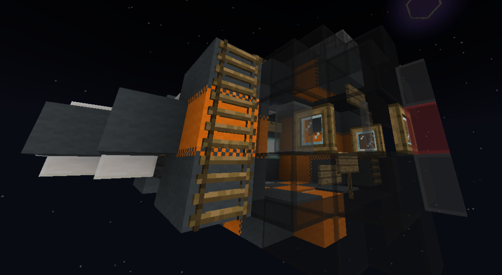

Home
Craft types
When constructing your next warship merchant craft, it's important to choose the correct
craft type. This page lists the different craft types along with their stats to help you decide.
- Most craft require Flight blocks, these provide 'lift' to the craft, These will be referred to as Fblocks.
- Engine blocks are similar to Flight blocks, they provide 'thrust' to the craft, and will be referred as Eblocks.
- All craft will limit how many Chests/Barrels you can have on them, (Sblocks) each craft has the maximum percentage of these blocks listed.
- For a list of block types for a specific craft, click on it's title. Below is a list of all craft types and their stats.
Spaceships
Spaceships are the main craft type of the Celestial Expanse as they are the only craft type able to travel between planets.
Starfighter
Starfighters are the smallest and lightest spaceship, they are incredibly fast but not very well armoured, making them good for moving between bases / light defence but not much else, You are likely already familiar with at least one starfighter: the LiFi Guppie starter ship,
Cargoshuttle
Cargoshuttles are pretty much identical to starfighters but with the notable advantage of being able to use rift drives and a much higher cargo capacity.
Starship
Starships are the next step up from cargoshuttles, these sleek ships use beacons instead of wool/carpets as their flight block, enabling players to get more inventive with the design.
Freighter
As you can probably guess, freighters are best for moving cargo as an impressive 22.5% of the ship can be used just for storage, while also being relatively accessible with a minimum size of 1,500 blocks.
Dreadnaught
no image available
These hulking ships are the biggest to realistically be constructed, and are notable in that a certain percentage of the craft can be stonebricks, making them a good choice for carriers.
Station
no image available
Stations are massive, with a minimum size twice that of dreadnaughts, they are essentially moving bases, although 'moving' is perhaps a bit misleading, as due to their size and slow speed the only realistic way to move them is with rift drives.
StarTitan
no image available
The largest spacecraft - or indeed any craft - possible to build, however, due to their insane size none exist, Interestingly these would technically be the best craft for moving items as they have the highest allowed Sblock%.
Aircraft
Aircraft are a step down from spaceships, being able to fly but not go to space. However, they have much lower fuel consumption.
Airship
no image available
Airships are a classic movecraft ship, they have a much higher required flight block percentage than spaceships but a lower fuel consumption.
Plane
no image available
Planes are essentially renamed airskiffs, and are smaller versions of airships with less required flight blocks and less storage capacity.
Land craft
Land craft are unable to fly, and can only crawl along the ground, while they may sound useless they do have some advantages over spaceships such as smaller minimum sizes and slightly lower fuel consumption.
Tank
Tanks are the base land vehicle, their main advantage is the minimum size of 25 blocks meaning you can
make tiny craft.
Generally best for moving around large bases / quarrying.
Train
no image available
Trains don't need Fblocks, and they have a ridiculous allowed Sblock percentage, making them excellent for moving items around on a planet.
LandTitan
no image available
LandTitans are essentially massive tanks, their size and long list of allowed blocks allows you to feasibly make a moving base with one, if you so wish.
Water craft
Water craft are restricted to moving in water and are unable to go on land or fly, however they have lower fuel consumption or in the case of ships and skiffs, none at all.
Ship
no image available
Ships are the primary boat craft type, and what you will likely use for building water craft. Their main advantage is that they don't need fuel to move, instead relying on sails. (wool/carpet)
Skiff
no image available
Skiffs are basically just smaller versions of ships, however they are notable that they just need Wool or Carpet to function, with no engine blocks required, they also don't use fuel.
Submarine
no image available
Submarines are the only craft to solely function underwater, they also require two types of Fblock (Iron blocks and Wool/Carpet)